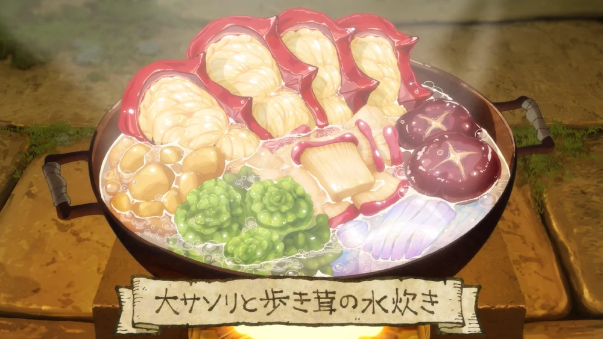

HUGE SCORPION AND WALKING MUSHROOM HOTPOT

Description
A warm, nourishing dish, made from ingredients found on the first floor of the dungeon. Scorpion, mushroom, algae, tubers and dried slime noodles are all boiled together in water, creating a light soup.
Ingredients
- Huge Scorpion (1)
- Walking Mushroom (1)
- Mushroom feet (2)
- Seaweed (artic moss, star jelly) (as needed)
- Invertatoes (about 5 med. size)
- Dried slime (to preference)
- Water (as needed)